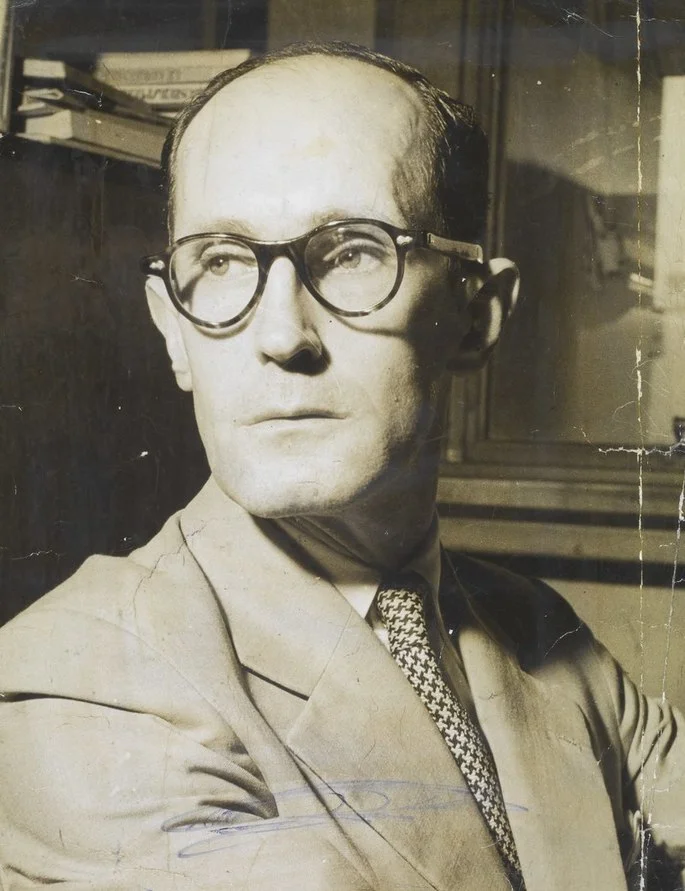
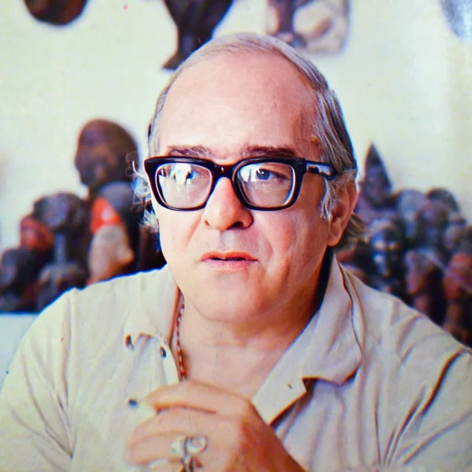
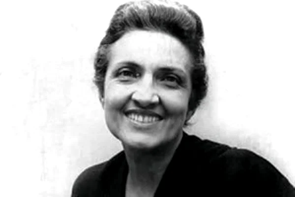
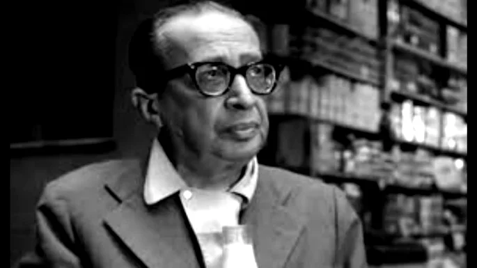
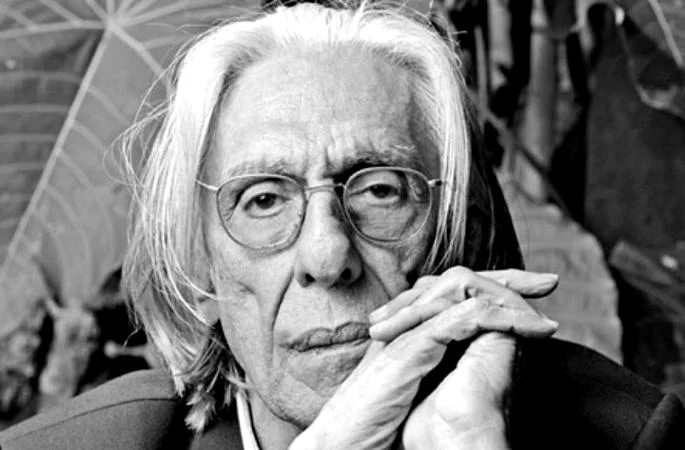
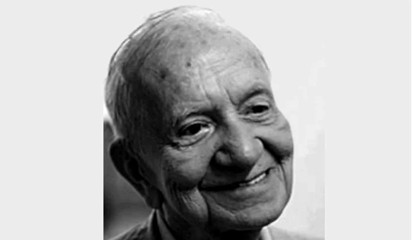

Carlos Drummond de Andrade

Poeta modernista mineiro, Drummond é considerado um dos maiores poetas brasileiros do século XX. Grande destaque da segunda geração modernista, além de poemas, escreveu crônicas e contos.
Vinicius de Moraes

Poeta e compositor brasileiro carioca, Vinicius foi um dos precursores da bossa nova no Brasil. Teve grande destaque na poesia de 30, na segunda fase do modernismo no Brasil. Seus poemas têm como temática o amor e o erotismo.
Cecília Meireles

Poetisa brasileira carioca, Cecília é uma das primeiras mulheres a ter grande destaque na literatura brasileira. Foi escritora da segunda fase do modernismo no Brasil. Seus poemas apresentam caráter intimista, com forte influência da psicanálise e da temática social.
Manuel Bandeira

Poeta brasileiro pernambucano, Manuel teve grande destaque na primeira fase do modernismo no Brasil. Além de poemas, escreveu também obras em prosa. Com grande lirismo, sua obra versa sobre temas do cotidiano e da melancolia.
Ferreira Agullar

Poeta brasileiro contemporâneo e precursor do movimento neoconcreto, Gullar nasceu em São Luís do Maranhão. É considerado um dos maiores escritores brasileiros do século XX, dono de uma obra social, radical e engajada.
Mario Quintana

Poeta brasileiro nascido no Rio Grande Sul, Mario é conhecido por ser o “poeta das coisas simples”. Considerado um dos maiores poetas brasileiros do século XX, teve grande destaque na segunda fase do modernismo no Brasil. Sua obra poética explora temas como o amor, o tempo e a natureza.